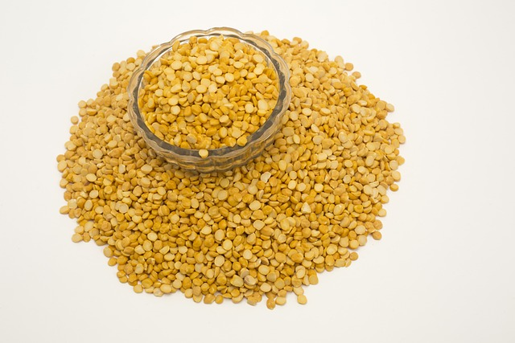

Split Pea Soup

Description
While growing up this recipe was an essential part of every New Year's Day celebration. The ham was leftover from Christmas dinner and all the other ingredients were readily available from the pantry.
I hope you enjoy it.
Ingredients
- 1kg split peas
- 2 onions, finely chopped
- 2 carrots, finely chopped
- 2 celery stocks, finely chopped
- 4 garlic cloves, finely diced
- 500g roughly chopped cooked ham
- Optional: bone from ham roast
- white wine
- Bay leaves
- Oregano
- Thyme
- Salt
- Olive oil
Steps
- In a large soup pot heat the oil then add onion, carrot, and celery to create a soffrito. On medium heat cook for 5-7 mintues. As needed deglaze the bottom with white wine or water. Add garlic and allow to bloom.
- Add ham and cook for 7-10 more minutes. Stir frequently enough to prevent burning.
- Heat 2-3 liters of water in a kettle then add to pot. Add split peas and herbs. If you have the optional ham bone add now.
- Cook on low heat for 1-2 hours depending on how soft you prefer the split peas.
- Remove the bone and salt to taste.